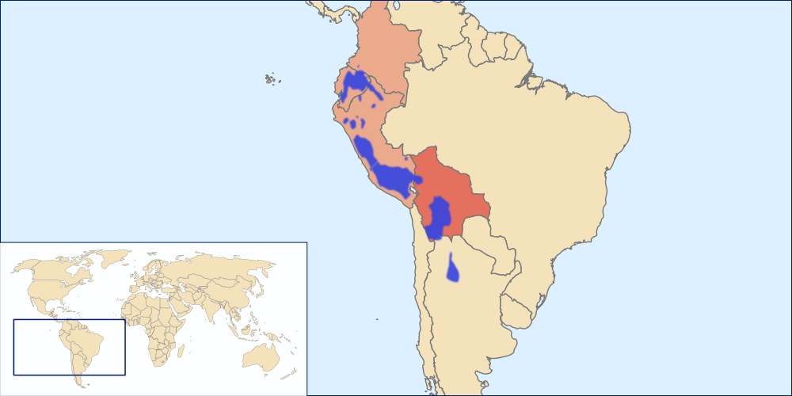
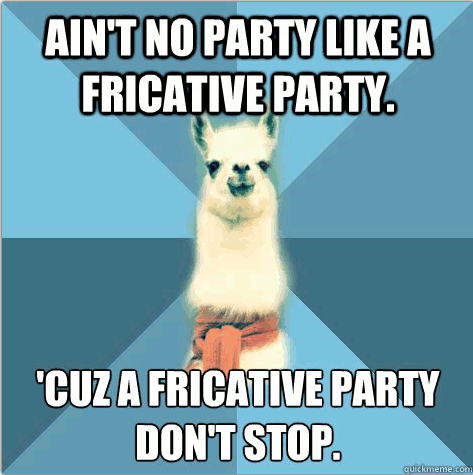
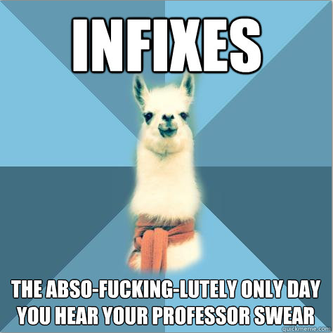
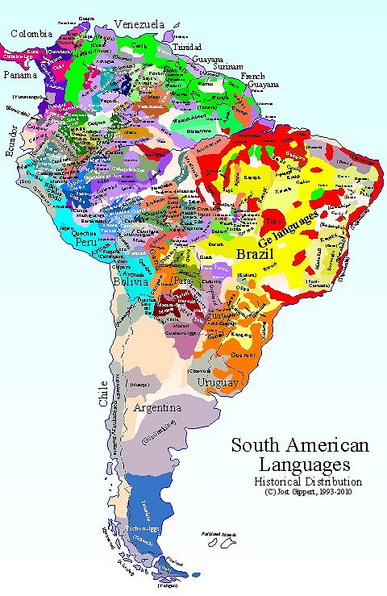
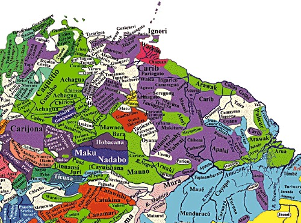

<lang>Quechua</lang><br><ldata>Quechuan - Peru</ldata> <iframe data-autoplay width="840" height="500" src="http://www.youtube.com/embed/_F9-23uhI4M"></iframe> Wayna Picchu - El Condor Pasa --- ### Why didn't the Wichita tribe have kings? <img class="big" src="lotwimg/wichita_grass_house.jpg"> --- ### Because when you live in a grass house, you shouldn't stow thrones! <img class="big" src="humorimg/badpundog.jpg"> <!-- .element: class="fragment" --> --- ### Administrative Notes * Check your schedules to see if you have a conflict with the final, then *email me before Dec 1st!* * The final exam review is online! * The final will be ~85 Scantron questions and one long-answer question (100 points total) * The scantron will be a mix of multiple-choice, true/false, and matching * Some language analysis * **Recitation is cancelled Friday!** --- ### Want a fun linguistics class for Spring? * LING 2040 ("Language and Gender") is being taught by Jessica Holman * Who is awesome, and loves this stuff * This is high-quality sociolinguistics * It fulfills an Arts and Science Diversity requirement --- # Languages of South America ### LING 1020 - Will Styler --- ### Today's agenda * Quechuan languages * Tupian languages * Amazonas * Missionaries and Linguistics --- # Quechuan Languages ---  --- ### Quechuan Languages * Spoken mostly in Peru, Bolivia, and Ecuador * Around 10 million speakers * May be related to the nearby Aymara Languages * This is the controversial "Quechumara" language grouping * This family is best thought of as a dialect continuum for Quechua --- ### Quechua * An Official language in Peru, Bolivia, Ecuador * 8-10 million speakers --- ### Features of Quechua * Three vowels (a, i, u) * No voiced/voiceless contrast * SOV, Agglutinating * Inclusive/exclusive pronouns --- ### Quechua has 10 million speakers, but no commonly-used writing system * <danger>What effects would this have on the language and the speakers?</danger> * Lack of writing system often hurts a language's chances of survival * "Well, I'll just write in Spanish!" * Written language is a great way to maintain culture! --- ## This is not unique * Only 1/3 of world languages have a writing system * ... and even then, many speakers are not literate in their languages * *Don't take "language" to mean "written language"* --- <lang>Quechua</lang><br><ldata>Quechuan - Peru</ldata> <iframe data-autoplay width="840" height="500" src="http://www.youtube.com/embed/BslLkUXf64Y"></iframe> --- ### Quechua Loanwords * Coca * Condor * Jerky * Puma * Guano --- ### ... and llama <!-- .element: class="fragment" --> --- Did you know that Linguists have their own meme? * ### Linguist Llama ---  ---  --- <img class="big" src="ling_memes/notcrazy.png"> --- --- # Tupian Languages --- <img class="big" src="lotwimg/tupian_map.png"> Tupi-Guarani is in light pink --- ### Tupian Languages * Spoken in Brazil and South America * Around 70 languages total * The most widely spoken is Guarani --- ### Guarani * An official language of Paraguay (along with Spanish) * Spoken both by Europeans and Indigenous folks * Heavily influenced by missionaries and the Jesuits * More on that later... * 4.8 Million speakers --- ### Features of Guarani * Six vowels (+ nasal versions) * Inclusive vs. Exclusive pronouns * Prenasalized stops * Whoa! * Circumfixion! * Nasal Harmony! --- (Finally, some new features!) --- ## Circumfixation --- ### We've talked about lots of affixation * **Prefix** - Attaches to the beginning (as in **pre**fix) * **Suffix** - Attaches to the end (as in loud**ly**) * **Infix** - Attaches in the middle (Abso-**fucking**-lutely) * **Circumfix** - Attaches to *both sides* --- <lang>Guarani</lang><br><ldata>Tupian - Amazonas</ldata> rekororõ 'You Snore' * **ne**rekororõ**i** * 'You don't snore' --- <lang>Guarani</lang><br><ldata>Tupian - Amazonas</ldata> ojupí 'They go up' * **nd**ojupí**ri** * 'They don't go up' --- ### Circumfixation is the only kind of affixation English won't touch * ... but I encourage you to try * "Uh oh, it's produced by Fu-Michael-Bay-cking" --- ## Nasal Harmony --- ### Nasal Harmony When nasality spreads throughout the word triggered by a nasal vowel --- <lang>Guarani</lang><br><ldata>Tupian - Amazonas</ldata> laseraʔɨ̃ʔɲãkãɣ̃ãpãĩtẽɾei ‘my child is just too stubborn at school’ * (Yes, that's a nasalized fricative.) * (Yes, that's *really* weird.) --- Speaking of really weird... --- ### Guarana * Guarani for 'The Eyes of the People' --- <img class="big" src="lotwimg/guarana.jpg"> --- <lang>Guarani</lang><br><ldata>Tupian - Amazonas</ldata> <iframe data-autoplay width="840" height="500" src="http://www.youtube.com/embed/zdfuVc9bu7w"></iframe> --- # Amazonas --- <img class="big" src="lotwimg/south_american_langs.jpg"> ---  ---  --- ### Linguistic Diversity in Amazonas * Around 300 languages * The jungle makes it rather easy to be isolated * The Arawakan family is the largest family * Pereltsvaig talks about it some, but that's all we'll do --- ### We can't come anywhere near showing the diversity of this region * So let's just hear some examples --- <lang>Lokono</lang><br><ldata>Arawakan - Amazonas</ldata> <iframe data-autoplay width="840" height="500" src="http://www.youtube.com/embed/KtEOfIQKQvg"></iframe> --- <lang>Pirahã</lang><br><ldata> Mura - Amazonas</ldata> <iframe data-autoplay width="840" height="500" src="http://www.youtube.com/embed/SHv3-U9VPAs?start=45"></iframe> --- ### Pirahã is a really odd language * Pereltsvaig talks about why * So does "[Don't sleep, there are snakes!](http://www.amazon.com/Dont-Sleep-There-Are-Snakes/dp/0307386120)" * Which is pretty entertaining --- ### The least controversial crazy thing about Pirahã? * Pirahã has only three numbers: Fewer, Few, and Many. --- ### How many Pirahã speakers does it take to screw in a lightbulb? * Fewer! --- <img class="big" src="humorimg/facepalm_bear.png"> --- ### Many of these languages are struggling and dying * Business is conducted in a *Lingua Franca* * Many are already bilingual * Some indigenous groups are merging as populations dwindle * Many populations are now threatened by oil drilling, logging, and ranching * So, we cannot assume that these languages will last, even if they're isolated --- We have a paradox in Linguistics (and anthropology) * ### Do we intervene and describe isolated languages and cultures, or stay back and let them be? * <danger>What do you think?</danger> * This brings up another controversial group! --- ### Missionaries in Linguistics <img class="big" src="humorimg/missionaries.jpg"> --- ### The role of Missionaries in Linguistics * Historically, lots of linguistic research has been done under the guise of "missionary work" * This does make some sense --- ### The Goals of Descriptive Linguists * Learn the language * Learn about the Culture * Develop a writing system * Write a grammar --- ### The Goals of Missionaries * Learn the language * Learn about the Culture * Develop a writing system * Write a grammar * **Translate the Bible!** * Or whatever other important holy text they've got --- ### Missionaries write grammars * Missionaries were doing linguistic descriptions before they were a thing * Many of our early grammars of indigenous languages are from missionaries * Sometimes, the only outsiders to visit a language are missionaries * Many missionaries are also quite linguistically compentent * Dan Everett (the Pirahã guy) started as a missionary --- ### Missionaries sometimes write *bad* grammars * There's a strong potential for bias * "No no, I don't need to know your terms for boating..." * "We're just going to call all of those other Gods "Satan"..." * Missionaries are sometimes sent out without training * "Wayaki is an isolating, polysynthetic language with oral and nasal tones" * "This clearly displays a Nominative/Ergative case system" * ... but they always collect data, which can be re-analyzed! --- ### Missionaries often create parallel texts * Putting the same text (or story, book, etc) into two different languages * The Jehovah's Witnesses are particularly prolific translators * [Here are their leaflets in Quechua](http://www.jw.org/en/publications/books/?contentLanguageFilter=qvw) * ***The above link does not constitute an endorsement of any teachings or faith*** * There are a shocking number of evangelical videos in odd languages on Youtube * [These folks are a prolific example](https://www.youtube.com/channel/UCo8b-uS6uD5l9YitDJpA2RA) * ***The above link does not constitute an endorsement of any teachings or faith*** * These are really useful in computational linguistics, and really interesting to the rest of us --- ### Missionaries can create good resources * [SIL International](http://www.sil.org) is a Faith-based group * They make IPA fonts for computers, language description resources * ... and they run the Ethnologue * *The SIL folks are top-shelf linguists* --- ... but there's one fundamental difference between Missionary work and Linguistic work --- Linguists and Anthropologists ***describe*** languages and cultures * Missionaries aim to ***change*** language and cultures --- ### Changing culture changes languages * Guarani has a great deal of Spanish in it because of the Jesuits * Religious conversions wipe out religious vocabulary * ... and that tends to be a rich linguistic area * Cultural changes lead to language changes too * Cultural changes tend to be assimilatory * Missionaries tend to encourage drift towards European values * Linguists change cultures, too! * They just don't mean to. --- ### Everybody has an opinion on whether that's OK * ... and I'm not going there --- ... but both linguistic description and missionary work play a role in the Circle of Linguistic life. --- ### Wrapping Up * Quechua is awesome * Guarani is awesome * ... and Guarana is creepy * Amazonas is crazy-diverse * Outsiders play a complex role in language preservation --- ## In Recitation: Nothing! Recitation is cancelled! --- ## Next time: The Circle of Linguistic Life! <correct>Read [Hinton's Language Revitalization Handbook Chapter 1](readings/Hinton_Language Revitalization_An Overview.pdf)</correct> --- <huge>Thank you!</huge> ---